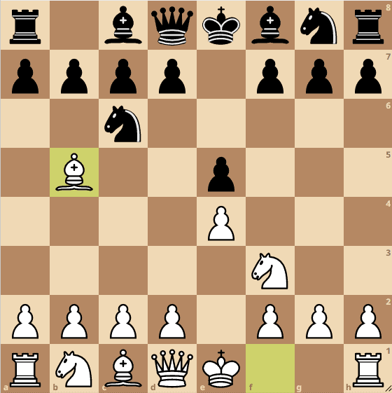
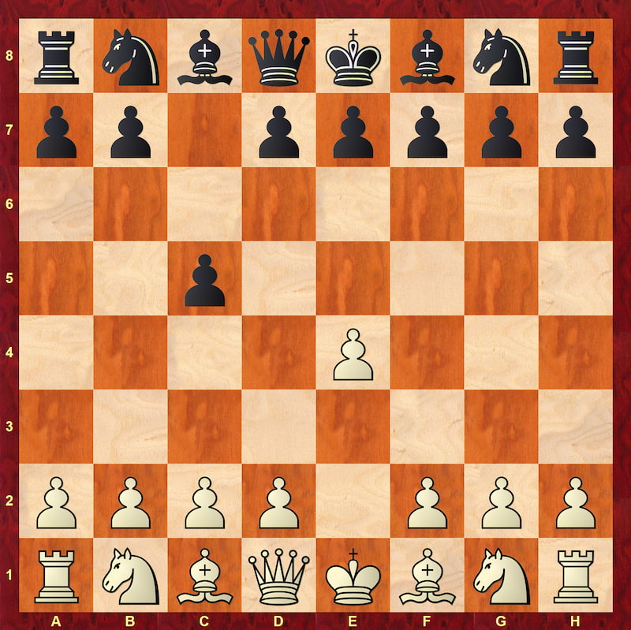
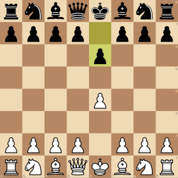
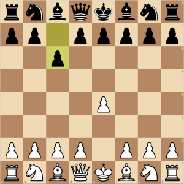
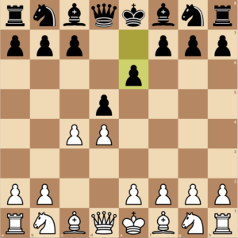

Chess Openings Overview
Chess openings lay the foundation for every game. To improve, familiarize yourself with popular openings and their underlying theory. Each one offers a distinct style, whether offensive or defensive.
For White, beginners often start with the King’s Gambit, Queen’s Gambit, Ruy Lopez, or the English. For Black, the Sicilian Defense, French Defense, Scandinavian, and the Slav are common choices.
Ultimately, understanding the concepts behind an opening matters more than memorizing move orders. Once you know your preferred play style, exploring specific openings becomes much easier.
Look below to learn more!
| Opening | Preview |
|---|---|
|
Ruy Lopez
Also known as the Spanish Opening. |
 |
|
Sicilian Defense
One of the most popular defenses against 1.e4. |
 |
|
French Defense
A solid opening characterized by the move 1...e6. |
 |
|
Caro–Kann Defence
Another solid response to 1.e4, known for its defensive structure. |
 |
|
Queen's Gambit
A classic opening that starts with 1.d4 d5 2.c4. |
 |
Here are great resources about chess we encourage you to check out
Here’s a few useful links for further study:
Chess Openings by Chess.com
A list of various chess openings with a short introduction to each.
Note: A paid account is required for full access.
Chess Openings on Wikipedia
The authoritative online encyclopedia has tons of information on chess openings.